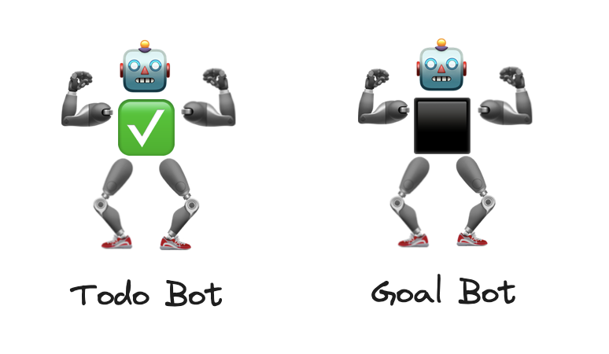
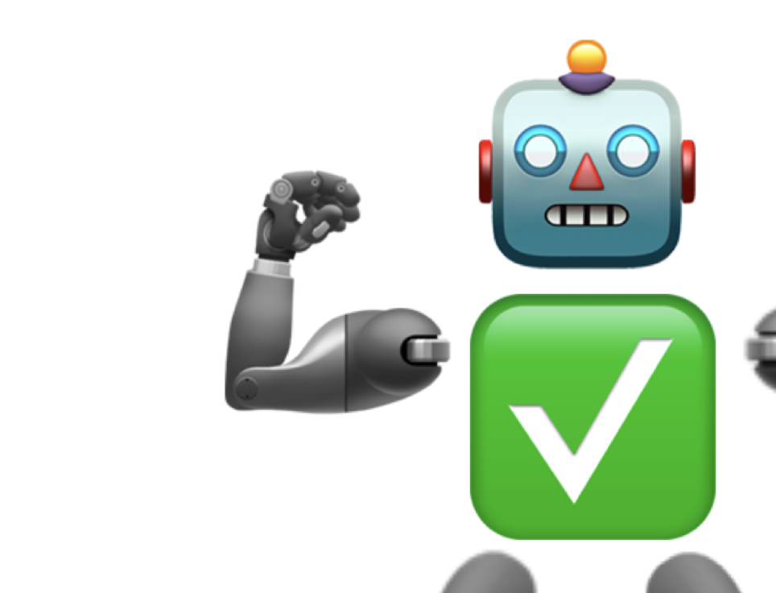
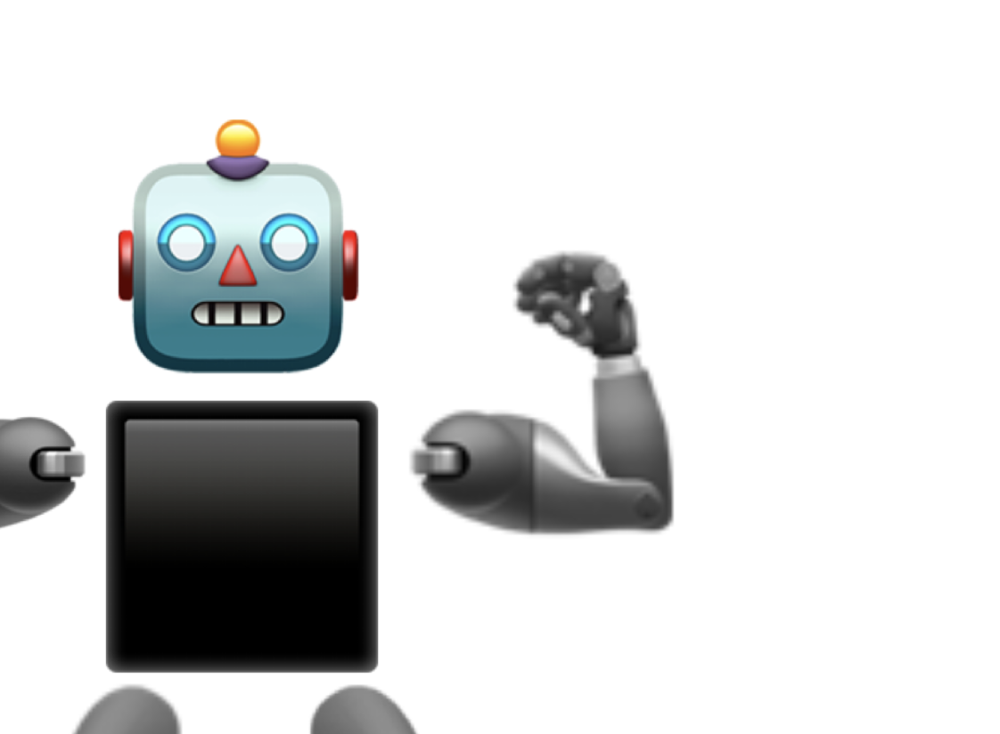

Todo-bot vs. Goal-bot


The Todo-bot
- Does what you tell it to do, compliant with any request
- Takes a list and does them in order
- You set its task in priority order
- Tells you when it’s doing somthing or when it’s stuck
- Maintain itself, when told to do so
- Respects your authority at all times
- Comes with a built-in progress bar
- Needs rewards for each task done

The Goal-bot
- Does not take orders on what to do
- Needs description on how the world will change by its actions
- Can only focus on one goal at a time: can’t process goal lists
- Autonomously seeks tasks towards the goal
- Can’t tell you exactly what it will do, or when it will do it
- Maintains itself if it helps achieve the goal
- Prioritizes own tasks
- There’s no progress bar
- Needs rewards for doing the right thing
Exercise for the reader
- Which bot would you rather hire?
- What would an assembly of each class of bots look like?
- Which bot are you?
- Which bot do you treat your future self as?
- How would you debug either bot?
- How do you measure each bot’s performance?
- How would you incentivize each bot to maximize their performance?
- What’s the internal data structure of each bot?
- Is it possible to combine the positive attributes of both?
- Can they work together effectively?